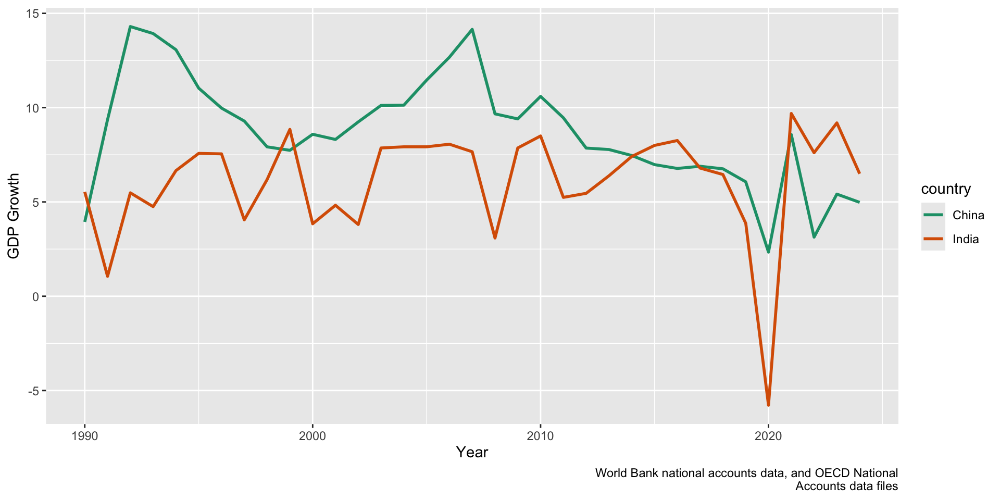

Lecture 7.1
Washington Consensus Reforms
The Washington Consensus
10 Policy Prescriptions
- Fiscal discipline
- Public expenditure (investment vs consumption)
- Tax reform (expand tax base, cut marginal rates)
- Financial liberalization
- Competitive exchange rates
- Trade liberalization
- Foreign direct investment (remove barriers)
- Privatization of state-owned enterprises
- Deregulation of markets
- Secure property rights
Economic Crisis
Elements of an Economic Crisis
- Recession
- Low or negative growth rates
- High unemployment
- Hyperinflation & shortages
- Government prints money to cover debts
- Hoarding
- Balance of payments crisis
- Sudden stops or reversals of capital inflows
- Debt crisis
- Proliferation of public debt relative to GDP
- Financial crisis
- Assets bubbles
Causes of Crisis (Neoliberal Diagnosis)
- “Bloated” public sector
- Inefficient/wasteful
- Crowds out private sector investment
- Corruption
- Deters investment generally
- Over-regulation of private sector
- Impedes expansion of formal sector
- Government spending and debt
- Drives inflation
Crisis in Eastern Europe
Economic Organization Under Communism
- Centralized planning
- Bureaucratically established quotas and targets
- No market dynamics of supply and demand
- Key economic goals
- Full employment
- State ownership and control
- International isolation/autarchy
Pitfalls of Central Planning
- Information
- No price mechanisms
- Government is not omniscient
- No way to regulate supply and demand
- Barter economy, black markets and shortages
- Perverse incentives
- No profit-maximizing behavior
- Lack of innovation
- Soft budget constraints in public sector: waste, theft, poor quality of goods
Adverse Results
- Widespread theft and embezzlement of state property
- Centralized planning system stops working
- Escalating inflation because counties keep printing money
- Mass shortages of even basic goods

Crisis in India
India’s Economic System
- “Nehruvian” industrial policy rather than central planning
- Import substitution
- Protection of domestic industry
- High tariffs
- Market controls
- ‘License-Quota Raj’
- Dominance of the public sector
- Low quality goods
- Shortages
- Inefficiency
- End result: inflation and decreased trade
1991 Economic Crisis
- Proximate cause: balance of payments (BOP) crisis
- Occurs when the total amount of receipts is less than the amount of total payments
- Causes of crisis in India
- Collapse of Soviet Union (Trade)
- Gulf War (Oil)
- Capital flight, speculative attack on credit, balance of payments and currency crisis
Neoliberal Reforms
Reform #1: Stabilization
- Goal: prevent hyperinflation from escalating out of control
- Austerity regime meant to curb inflation
- Reduce or halt public spending
- Curb public expectations
- Devalue currency
- Raise taxes and government revenue
- Can’t print money to solve the problem
Reform #2: Liberalization
- End price controls, production quotas, reservations, etc.
- Encourage foreign trade and investment
- Reduce tariff barriers
- Lift curbs on foreign direct investment
- Goals
- Attract real money, which is in short supply
- Increase competition and innovation
- Spur investment in industry and high-end services
- Reduce state subsidies (expensive, interfere with market forces)
- Cash, tax breaks, loan guarantees, procurement prices, stock purchases
- Farm, oil, housing, export, etc.
- Financial sector reforms
- Allow private and foreign banks freedom to operate
Reform #3: Privatization
- Selling off of state assets to private actors
- Develop greater efficiency and increase output
- Better managers
- Better incentives
- Create markets and entrepreneurs
- Generate revenue for the state
Reform #4: Structural Adjustment
- Long-term structural reform
- Extending neoliberal reforms
- Reducing government role in economy
- Liberalizing factor markets
- Land, labor, capital
- The ultimate goal is to boost productivity
- Not just removing price controls or privatizing
- Making institutions growth-enhancing
- Industrial policy, investment policy, governance, etc.
Shock Therapy vs. Gradualism
“Shock Therapy”
- Quick moves to stabilize the economy through an evolutionary approach
- Goal of remaking economies quickly
- Internationally-renowned teams experts sent to oversee reforms
- Eastern Europe is a good example
Gradualism
- Step-by-step implementation of reforms
- Put correct political institutions in place before revamping the economy
- Courts, tax inspectors, regulatory agencies, and financial intermediaries
- Advocated by other prominent economists (Joseph Stiglitz) and intellectuals
- India is a good example
- Fast on trade, investment and license quota raj
- Slow on privatization, labor law and other contentious reforms
“Partial Reform Equilibrium”
- Winners of early reforms blocked further progress:
- Benefited from access to legislation and coveted assets
- Created a system in between capitalism and communism where a select few benefitted
- State Capture
- Powerful private interests asset control over both the economy and political decisions
- Think oligarchs!
Businesses Corrupting the State
- Innovative ways of wielding influence
- Buying laws outright
- Running for elected office
- Hiring the relatives of politicians
- Mobilizing their workers to act politically
Effectiveness of Reforms
Transition Progress in Eastern Europe

Growth Rates in India and China
Poverty and Inequality in India


Discussion
Archibong et. al.
- What is the main hypothesis?
- What reforms are they examining in the African context?
- Quantitative analysis
- What are they trying to show?
- Is it convincing
- Case studies, each group take one